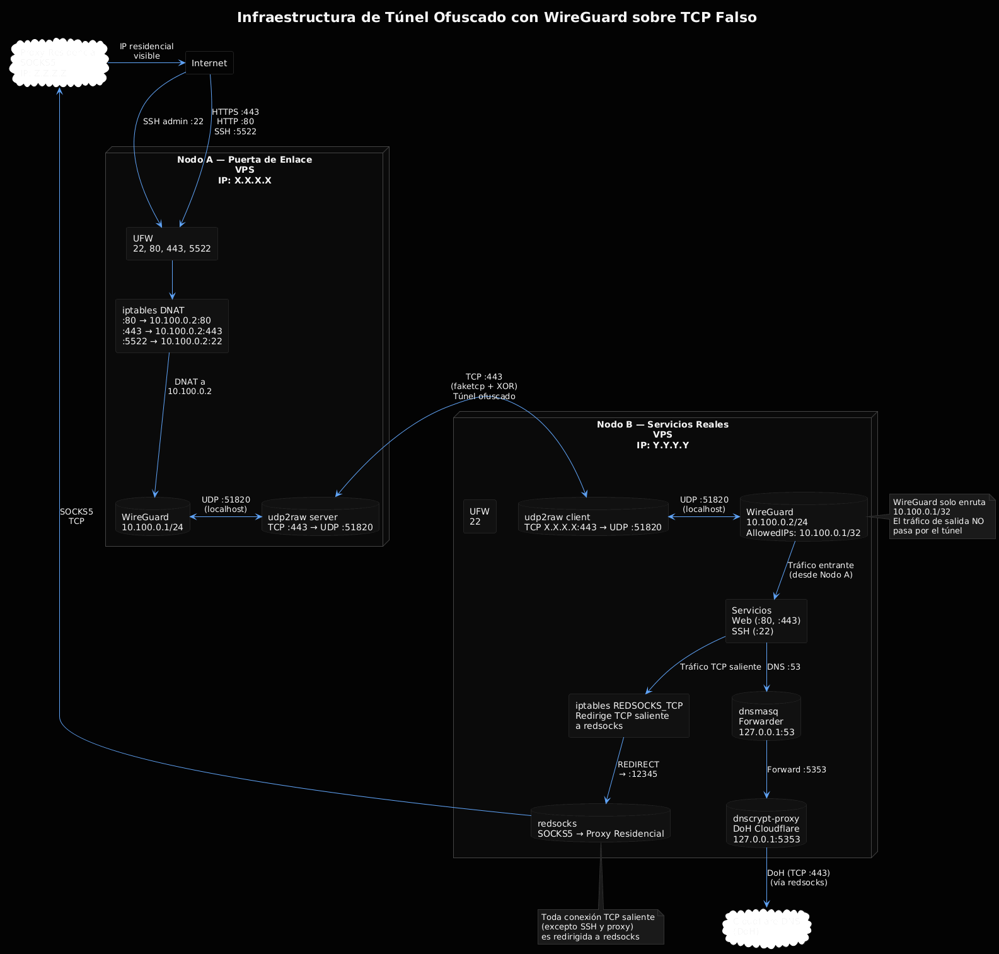

Infraestructura Ofuscada: Túnel WireGuard sobre TCP Falso con Proxy Residencial y DNS Blindado
Diseño, implementación y automatización de una infraestructura de red privada virtual con túnel ofuscado mediante udp2raw, enmascaramiento de salida con proxies residenciales, y resolución DNS cifrada sobre HTTPS.
00. Diagrama de Arquitectura

01. Arquitectura General
El diseño se basa en un modelo de dos nodos con roles claramente diferenciados, comunicados exclusivamente a través de un túnel privado ofuscado. Esta separación permite que el nodo que ejecuta los servicios reales no exponga su dirección IP a Internet, reduciendo drásticamente la superficie de ataque.
Nodo A — Puerta de enlace pública
Este nodo actúa como único punto de entrada para todo el tráfico legítimo. Recibe las conexiones entrantes en puertos no estándar, las redirige a través del túnel privado hacia el nodo B, y expone únicamente los puertos necesarios para la operación. Su IP es la única visible para el mundo exterior.
Nodo B — Servicios reales
Este nodo ejecuta los servicios internos y no expone ningún puerto a Internet salvo el acceso administrativo. Todo el tráfico legítimo le llega desde el nodo A a través del túnel. Adicionalmente, enmascara su tráfico de salida mediante proxies residenciales, con resolución DNS blindada a través de DNS over HTTPS (DoH).
La separación de roles entre "puerta de enlace" y "servidor de aplicaciones" es un patrón clásico de defensa en profundidad. Si el nodo A es comprometido, el atacante no obtiene acceso inmediato a los servicios internos ni a los datos que residen en el nodo B. Si el nodo B es comprometido, su IP real no queda expuesta en logs públicos.
02. Túnel Privado: WireGuard sobre TCP Falso
El problema del UDP en entornos restrictivos
WireGuard utiliza UDP como protocolo de transporte. Esto presenta dos problemas en entornos operativos: firewalls restrictivos que bloquean UDP no solicitado, y sistemas de inspección profunda de paquetes (DPI) que pueden identificar y bloquear el handshake de WireGuard por su firma.
udp2raw: encapsulación TCP con ofuscación
udp2raw resuelve ambos problemas simultáneamente. Esta herramienta toma el tráfico UDP nativo de WireGuard, lo encapsula dentro de una conexión TCP, y aplica una capa de ofuscación mediante una clave compartida. El resultado es un flujo TCP que, para un observador externo, no revela su naturaleza de túnel VPN.
Con udp2raw en ejecución, WireGuard en el nodo B se configura para conectarse a 127.0.0.1:51820 (el extremo local del túnel udp2raw), pero en realidad todo el tráfico viaja como TCP falso hacia el puerto 443 del nodo A, un puerto que rara vez está bloqueado.
Configuración de WireGuard: enrutamiento selectivo
Un detalle crucial en la configuración del nodo B es la directiva AllowedIPs. No se enruta todo el tráfico por el túnel (0.0.0.0/0), sino únicamente la IP del nodo A dentro de la red privada:
Si el nodo B enrutara todo su tráfico de salida a través del nodo A, dos cosas indeseables ocurrirían: (1) el tráfico de salida revelaría la IP real del nodo A, y (2) se perdería la capacidad de usar un proxy residencial independiente para el tráfico de salida. El enrutamiento selectivo mantiene ambos canales separados: entrada por el túnel, salida por el proxy.
03. Entrada de Tráfico: Redirección con iptables
Para que los clientes externos accedan a los servicios del nodo B sin conocer su IP, se configuran reglas de iptables en el nodo A que realizan DNAT (Destination NAT) de los puertos de entrada hacia las IPs y puertos correspondientes del túnel:
El flujo de una conexión entrante es: Internet → Nodo A:80 → [DNAT] → 10.100.0.2:80 (Nodo B). El nodo B ve la petición como proveniente de la IP privada del nodo A (debido al MASQUERADE en la cadena POSTROUTING), pero para el cliente externo la IP visible es la del nodo A.
04. Salida de Tráfico: Proxy Residencial y DNS Blindado
El nodo B debe ocultar su IP real cuando inicia conexiones hacia Internet. Para ello se emplea una combinación de tres componentes:
dnscrypt-proxy: DNS sobre HTTPS
Se configura como resolver DNS utilizando Cloudflare sobre HTTPS. Escucha en 127.0.0.1:5353 y fuerza todas las consultas a TCP. Esto elimina por completo las fugas DNS por UDP y garantiza que las resoluciones de nombres viajen cifradas. Además, como el tráfico TCP de dnscrypt-proxy es capturado por redsocks, las consultas DNS también salen a través del proxy residencial.
dnsmasq: forwarder local
Actúa como un simple forwarder hacia dnscrypt-proxy, escuchando en 127.0.0.1:53. El archivo /etc/resolv.conf apunta a 127.0.0.1, por lo que todas las aplicaciones del sistema utilizan este resolver local sin necesidad de configuración adicional.
redsocks: transproxy SOCKS5
Levanta un daemon que escucha en 127.0.0.1:12345 y convierte cualquier tráfico TCP redirigido a ese puerto en conexiones SOCKS5 hacia el proxy residencial. La configuración se obtiene dinámicamente de una API externa:
iptables: redirección selectiva
Se crea una cadena REDSOCKS_TCP en la tabla nat que redirige todo el tráfico TCP saliente —excepto el dirigido al propio proxy, el tráfico hacia redes privadas, y el puerto SSH— hacia el puerto local de redsocks. Esto garantiza que las conexiones administrativas (SSH) no pasen por el proxy, evitando bloqueos accidentales.
Flujo de una conexión saliente: Nodo B (aplicación) → [iptables REDSOCKS_TCP] → redsocks → proxy SOCKS5 residencial → Internet. La IP que ve el destino es la del proxy residencial, no la del nodo B ni la del nodo A.
05. Control de Acceso y Firewall Mínimo
Ambos nodos implementan UFW con política por defecto restrictiva:
| Nodo | Puertos permitidos (entrada) | Propósito |
|---|---|---|
| Nodo A | 22/tcp, 80/tcp, 443/tcp, 5522/tcp | SSH administrativo, HTTP/S redirigidos, SSH alternativo para túnel |
| Nodo B | 22/tcp | Únicamente SSH administrativo directo |
El nodo B no necesita exponer el puerto 51820/udp porque el túnel se establece a través de udp2raw, que sale desde el nodo B hacia el nodo A (conexión saliente, no entrante). Esta configuración minimiza la superficie de ataque sin comprometer la disponibilidad de gestión.
06. Automatización del Despliegue
Toda la configuración —desde la instalación de dependencias hasta la verificación final de los túneles— está automatizada en un script de bash que se ejecuta en aproximadamente 90 segundos. El flujo del script es:
- Instalación de dependencias: WireGuard, iptables, UFW, udp2raw (compilado desde fuente), redsocks, dnsmasq, dnscrypt-proxy, jq, curl.
- Configuración de WireGuard + udp2raw en Nodo A: generación de claves, servicio systemd para udp2raw en modo servidor, habilitación de reenvío de paquetes.
- Configuración de WireGuard + udp2raw en Nodo B: claves, servicio udp2raw en modo cliente, configuración de WireGuard con enrutamiento selectivo.
- Vinculación de peers: intercambio de claves públicas y adición del peer en el servidor WireGuard.
- Configuración de DoH + proxy de salida: dnscrypt-proxy con Cloudflare sobre TCP, dnsmasq como forwarder, obtención dinámica de proxy residencial vía API, redsocks con iptables.
- Verificación: pruebas de conectividad bidireccional, prueba de servidor web a través del túnel, y verificación de que la IP de salida es la del proxy residencial.
07. Mejoras Futuras y Líneas de Trabajo
- Failover con IPs adicionales: contratar IPs extra en el mismo proveedor del nodo A para implementar un esquema básico de alta disponibilidad. Con dos IPs se puede configurar un balanceador inverso (nginx/HAProxy) que distribuya las conexiones entrantes.
- Monitorización y alertas: desplegar Zabbix o similar para detectar caídas del túnel o fallos del proxy, con notificaciones por Telegram, Slack o correo electrónico.
- Enrutamiento por proceso: usar una tabla de enrutamiento separada y reglas de política (ip rule) para que únicamente el tráfico generado por procesos específicos sea redirigido a través del proxy. Esto evita que herramientas administrativas como apt o curl de diagnóstico revelen accidentalmente información.
- Infraestructura como código: convertir toda la configuración en un playbook de Ansible o en un script de cloud-init. Esto permite recrear la infraestructura completa desde cero en minutos si un nodo es comprometido o se necesita escalar geográficamente.
08. Conclusión
El diseño presentado resuelve simultáneamente varios problemas técnicos: exposición de IPs, bloqueo de túneles VPN por DPI, fugas DNS, y trazabilidad del tráfico de salida. La separación de roles entre un nodo de entrada y un nodo de servicios, combinada con un túnel ofuscado y un proxy residencial independiente, proporciona una base sólida para operaciones que requieren anonimato y resiliencia.
La automatización completa del despliegue reduce el error humano y permite levantar una réplica exacta de la infraestructura en minutos. Las mejoras propuestas —failover, monitorización, enrutamiento por proceso— son pasos naturales hacia una infraestructura más robusta y profesional.